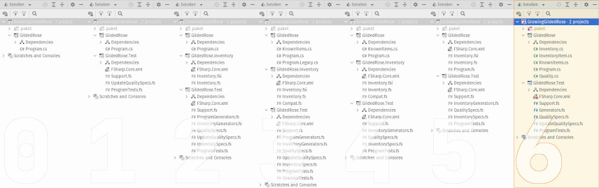

This is part six-of-four (no, really!) in the series, Growing a Gilded Rose. Over the course of this series of posts, I hope to demonstrate incrementally improving a legacy code base which has thorny requirements, while also presenting a few different software development tools or concepts. The full series is as follows:
Bonus Content
- F# All the Things!
- Meh... C# Can Do That, Too (this post)

Overview
Welcome back to the never-ending blog series! 😂 You'd think, by now, we could move on from the Gilded Rose Kata. But no, there's one more “riff” I'd like to spin. Bobby Johnson, who actually first put the kata up on GitHub.com, once opined that working the kata in a language other than C# will “miss the bigger picture”. Further, one hears a lot about all the new features recently added to .NET's primary language. So, with these as motivating factors, let's see how it looks to build things in “modern C#”!
You can see the final state-of-affairs in the companion repository, under
a branch called 4_extended (and if you haven't yet read the previous
entries in the series, now is a good time to get caught up). However, it turns
out a bit more fun can yet be eked out of this activity. Up until now, we've been operating under some fairly specific constraints:
- Keep the legacy program
- Don't mess with the
GildedRose.Itemclass or theProgram.Itemsfield
But let's play a bit of What If...
Management at the Gilded Rose Inn has been really impressed with all the changes. And just this week, the Goblin in the Corner announced he's retiring (after 107! years of loyal service) to his condominium in Boca Raton, where he hopes to play shuffleboard and work on model ship building. So, you've been given the go-ahead to take full ownership of the inventory program, going “all in” on modern C#.
The plan then, is to translate the source of the GildedRose.Inventory project.
We will directly include said translations in the GildedRose console
application project, removing any unneeded bits as we progress. The test suite
will also need to change. The old (F#) test suite will be discarded, and each
test recreated in C#. As this is a fairly mechanical process, we will not
explore the test suite as part of this blog post. However, the curious reader
is encouraged to browse the new test suite at their leisure.
Model Anatomy
From a structural perspective, the C# console application project should ultimately have the following five files:
The first of these files already exists, and is merely some useful
constant values (the names of some well-know inventory items). The Program.cs
file also already exists. However, as we will see later, it is subject to heavy
revision. The remaining three files comprise the model we've adapted from the
now-discarded F# project.
However, before we dive into the code, let's consider some of the qualities of the F# model, and how they might be surfaced in C#. There are three things that really “stand out” in the F# model:
- Data is immutable; operations return a new instance.
- Data is separated from behavior.
- Behavior is a transition from one state (input) to another (output).
It's worth noting: the third quality flows somewhat naturally from the first two. Further, it is the combining of all three of these qualities together which holds the actual interest and utility. Fortunately, C# has sufficient tools to help us preserve these aspects of the model. The following table breaks down the various elements of the model and how each is realized in F# and C#:
| Type | F# | C# |
|---|---|---|
MagicQuality |
struct | struct |
Quality |
struct record | struct |
Item |
discriminated union | records and interfaces |
UpdateItem |
function | static method |
Primitives
The model's “value objects” (the top two items in the previous table), are very
similar between F# and C#. In fact, MagicQuality contains only superficial
syntactic differences. Quality, meanwhile, does require more code in C# than
in F#. Specifically, the use of a record in the F# model gives rise to
“structural semantics” for free. These semantics are very important for
natural usage of the type. So, the C# version explicitly implements a few
interfaces (IEquatable<Quality>, IComparable<Quality>) and some overrides
(Equals, GetHashCode), in order to provide the same behavior. Fortunately,
that code is fairly “boiler plate”. In fact, many modern development tools can
automatically generate the necessary code. So, in the interest of space, we
won't repeat it here. However, it is worth looking at the domain-specific
parts of Quality. Specifically, the code for creation, addition, and
subtraction are as follows:
/// The value of a Ordinary item (n.b. constrained within: 0 .. 50, inclusive).
public readonly struct Quality
: IEquatable<Quality>, IComparable<Quality>, IComparable
{
private readonly byte value;
/// Constructs a Quality from the given value
/// (n.b. overlarge inputs are capped at Quality.MaxValue
/// and undervalued inputs are lifted to Quality.MinValue).
public Quality(int value)
{
this.value = (byte) Min(Max(value, 0), 50);
}
/// Defines an explicit conversion of a Quality to an signed 32-bit integer.
public static explicit operator int(Quality quality) => quality.value;
/* ... other functionality elided ... */
/// Overloaded addition operator
public static Quality operator +(Quality left, Quality right)
{
var sum = left.value + right.value;
return sum < left.value ? MaxValue : new Quality(sum);
}
/// Overloaded subtraction operator
public static Quality operator -(Quality left, Quality right)
{
var dif = left.value - right.value;
return left.value < dif ? MinValue : new Quality(dif);
}
}
In comparison to the F# version, the major differences are:
- Use of a constructor rather than a static method for instantiation.
- Conversion from/into an
intrather than abyte.
Both of these simply reflect stylistic norms, which differ between the two
programming language communities. However, the use of int as an input means
that, in C#, construction of Quality instances have to check for both high
and low boundary violation (see line 12, above). Meanwhile, the F# code can
get away with only checking the high end (since it takes byte inputs and
the minimum value for a byte is the same for a Quality instance), as shown below:
[<Struct>]
type Quality =
(* ... other functionality elided ... *)
static member Of(value) = { Value = min value 50uy }
Inventory
Moving on from the primitives, we come to the most significantly different part of the C# model: representing the actual inventory items. In the F# version, we used a single type -- a discriminated union -- to represent all possible variations of stock. As C# does not have a similar construct, we must take a different approach.
We define a separate record for each possible kind of item. Each type carries all the data needed for that particular inventory variant. Further, each type has a 1:1 correspondence with the cases of the discriminated union defined in the F# model.
/// An item with a constant value and no "shelf life".
public sealed record Legendary(string Name, MagicQuality Quality = default) : IInventoryItem;
/// An item whose value decreases as its "shelf life" decreases.
public sealed record Depreciating(string Name, Quality Quality, int SellIn) : IOrdinary;
/// An item whose value increases as its "shelf life" decreases.
public sealed record Appreciating(string Name, Quality Quality, int SellIn) : IOrdinary;
/// An item whose value is subject to complex, "shelf life"-dependent rules.
public sealed record BackstagePass(string Name, Quality Quality, int SellIn) : IOrdinary;
/// Similar to a "Depreciating" item, but deteriorates twice as quickly.
public sealed record Conjured(string Name, Quality Quality, int SellIn) : IOrdinary;
We also define two interfaces, each of which extracts some common subset of
properties across all the different record types. Note that neither interface
is required. However, IInventoryItem gives us an easy way to bundle together
many different instances (e.g. in an array). Meanwhile, IOrdinary, when used
in conjunction with pattern matching, greatly simplifies working with
non-Legendary items (which make up the majority of the actual inventory).
/// Tracks the name of any inventory.
public interface IInventoryItem
{
/// The name of a piece of inventory.
string Name { get; }
}
/// Tracks any inventory which has both a value and a "shelf life".
public interface IOrdinary : IInventoryItem
{
/// The value of a piece of inventory.
Quality Quality { get; }
/// The "shelf life" of a piece of inventory;
/// when negative may impact the items quality.
int SellIn { get; }
}
One small, but significant, detail of this model (as compared to its predecessor), is the loss of units of measure. We simply
use an int to describe an inventory item's “shelf life”. Contrast that with the F# model, where SellIn is of type int<days>. This is, perhaps, trivial in terms of functionality. But the loss of context definitely makes things less “self documenting”.
Logic
Finally, having defined: two structs; five records; and two interfaces, we can
manipulate instances of these types in the core of the model. Specifically, the
static class Inventory defines UpdateItem, which will perform the same role
as the updateItem function in the F# model, as shown below:
/// Change the quality and "shelf life" for an Item (i.e. apply
/// appropriate rules for the passage of a single "business day").
public static IInventoryItem UpdateItem(IInventoryItem stock) =>
stock switch
{
null => throw new ArgumentNullException(nameof(stock)),
IOrdinary ordinary => UpdateOrdinary(ordinary),
// if it's not ordinary, it must be legendary
_ => stock // Legendary things never change!
};
This static method takes a single IInventoryItem instance as input. It then
uses a switch expression to take one of three different actions:
- If the
stockisnull, an exception is thrown (line 6). - If the stock implements
IOrdinary, control is forwarded to another method (line 8). - If neither of the above are true, which should be
Legendary, the input is returned “as is” (line 11).
It is important to note, the logic listed above is dependent on the actual
inventory item types being correctly annotated (or not!) with the IOrdinary
interface. Regardless, the first and third cases are obvious enough. But let's
look into the second branch in more detail. The UpdateOrdinary method begins
as follows:
private static IOrdinary UpdateOrdinary(IOrdinary ordinary)
{
var agedTo = ordinary.SellIn - 1; // days
var rateOfChange = agedTo < 0 ? 2 : 1;
Unsurprisingly, it takes an instance of IOrdinary as input. It then calculates
two new values. agedTo is computed by decreasing the “shelf life” of the given
input by one business day. This new “age” is then used to determine the
rateOfChange, which is a multiplier effecting how quickly an item's Quality
will decrease or increase. The code then proceeds into another switch expression:
return ordinary switch
{
Depreciating { Quality: var quality } item => item with
{
SellIn = agedTo,
Quality = quality - new Quality(rateOfChange)
},
Appreciating { Quality: var quality } item => item with
{
SellIn = agedTo,
Quality = quality + new Quality(rateOfChange)
},
Conjured { Quality: var quality } item => item with
{
SellIn = agedTo,
Quality = quality - new Quality(2 * rateOfChange)
},
Here, different actions are taken based on the type of inventory item. However,
they all follow the same pattern. First, the current Quality is extracted.
Then, a new instance of the stock item is created (using a record's
nondestructive mutation syntax). Each new record has its “shelf life”
changed to the value computed at the start of this method. Meanwhile, each new
record's worth is changed accordingly:
- On line 6,
Depreciatingitems have their worth decreased - For
Appreciatingitems, on line 11, worth is increased Conjureditems' worth decreases twice as fast asDepreciatingitems (line 16)
Then we move onto the inventory with the most complex rules: BackstagePasses.
In order to address said complexity, there are actually four different branches
in our switch expression. First, we consider the case where “shelf life”, after
being updated, has fallen below zero.
BackstagePass item when agedTo < 0 => item with
{
SellIn = agedTo,
Quality = Quality.MinValue
},
In this case, on line 4, we fix the item's worth to the lowest possible value
(Quality.MinValue). Note also, we could optimize this code such that the
item's quality is only updated if it was previously non-negative. However, such
an enhancement has been left as an exercise for the reader.
We now move on to cases where, after being aged, the current backstage pass has not yet past expiry. All three cases are similar, increasing quality by a different amount based on the number of days until expiry.
// NOTE
// ----
// Pass quality has a "hard cliff", based on "shelf life".
// However, until then, its value is calculated against
// the _current_ expiry (i.e. before advancing the clock).
BackstagePass { Quality: var quality, SellIn: <= 5 } item => item with
{
SellIn = agedTo,
Quality = quality + new Quality(3)
},
BackstagePass { Quality: var quality, SellIn: <= 10 } item => item with
{
SellIn = agedTo,
Quality = quality + new Quality(2)
},
BackstagePass { Quality: var quality } item => item with
{
SellIn = agedTo,
Quality = quality + new Quality(1)
},
As indicated in the previous snippet, when determining days-until-expiry, we need to look at the “shelf life” of the backstage pass before it was aged. This subtle detail is essential for preserving the same behavior as the legacy code being replaced. Beyond that, we can see the simple relationship between “days left” and quality increase, as follows:
| Days until expiry | Amount of increase | Relevant lines of code |
|---|---|---|
| 0 ... 5 | 3 | lines 6 through 10, inclusive |
| 6 ... 10 | 2 | lines 11 through 15, inclusive |
| 11 ... ∞ | 1 | lines 16 through 20, inclusive |
Finally, the method concludes with a “catch all” pattern:
_ => throw new InvalidProgramException($"Inventory unknown: {ordinary}")
};
}
We don't expect to ever fall into this last branch of the code. However, it is
needed to make the compiler happy. Further, if this exception were ever to be
raised, it would indicate a serious problem, most likely in the definition of
IInventoryItem instances. It is curious to note: this is one of the drawbacks
of an “open hierarchy”. In other words, the “closed hierarchy” of the F# model
ensures “exhaustive handling” without requiring a wildcard case. Regardless,
the full implementation of UpdateItem may be found online.
Tidying Up
At long last we come back to where it all began, the Main method of the
Program class. As compared to the previous version, we will make the
following changes:
- Store the inventory as a local variable rather than a field
- Construct items of the appropriate types, as defined in
InventoryItem.cs
These two changes let us delete all of the following:
- The
GildedRose.Itemclass - The
IList<Item?> Itemsfield - The static method
UpdateItems
This last point is especially significant, as the now-removed method was primarily used to
simplify conversion between Inventory.Item and GildedRose.Item. Consolidating
types has lead to a very satisfying reduction in overall code. And less code
means less chances for a bug to sneak into the program. Finally, the newly
re-worked Main method is shown here, in its entirety:
public static void Main()
{
WriteLine("OMGHAI!");
var items = new List<IInventoryItem>
{
new Depreciating (Dex5Vest, new Quality(20), SellIn: 10),
new Appreciating (AgedBrie, new Quality( 0), SellIn: 2),
new Depreciating (Mongoose, new Quality( 7), SellIn: 5),
new Legendary (Sulfuras),
new BackstagePass (StageTix, new Quality(20), SellIn: 15),
new Conjured (ManaCake, new Quality( 6), SellIn: 3)
};
foreach (var item in items)
{
var (quality, sellIn) =
// Update program state
UpdateItem(item) switch
{
IOrdinary
{
Quality: var value,
SellIn: var days
} => ((int)value, days),
// if it's not ordinary, it must be legendary
_ => ((int)new MagicQuality(), 0)
};
// Display updated inventory
WriteLine($"Item {{ Name = {item.Name}" +
$", Quality = {quality}" +
$", SellIn = {sellIn} }}");
}
WriteLine("Press <RETURN> to exit.");
ReadLine();
}
Then program begins by printing a greeting to standard output (line 3). Next,
(lines 5 through 13, inclusive) we initialize the current inventory.
The interesting “meat” of the program occurs on lines 15 through 36, inclusive.
Having initialized the inventory, we now iterate through everything using a
foreach loop. Each item, in its turn:
- is updated via a call to
Inventory.UpdateItem(line 19) - is decomposed into its constituent values (lines 21 though 25, and line 28)
- said constituent values are bound to local variables (line 17)
- said local variables are printed to standard output (lines 33 through 35)
Note, the format used in printing exactly matches that of the legacy program. This is necessary, as it obviates the need to make any changes to the approval test in the test suite. Finally, we prompt the user to signal when they are done reading what we've printed (lines 38 and 39). If everything has gone as planned, there is no observable difference in the program's behavior. Further, 100% of the test suite should still be “passing”.
Conclusion
Through these changes we've preserved nearly all the benefits of previous efforts, while managing to keep the actual source code fairly “lean”. Further, we reduced the breadth of knowledge required to support this code base. It's fair to say that, overall, we decreased the maintenance burden for the Gilded Rose Inn's inventory management software.
From this foundation, there are several possible future enhancements. A motivated developer might experiment with any (or all) of the following:
- Allow the program to update multiple “days” in one run
- Load/save inventory from/into persistent storage
- Change the output to display the amount of change for each item
In any case, all of the code in this blog post, plus the test suite, can be
found in the companion repository, in a branch called 6_model-cs.
And, if you have questions or want to share feedback, there's also a
discussion forum for this blog series at the companion repo.
Have fun, and happy coding!